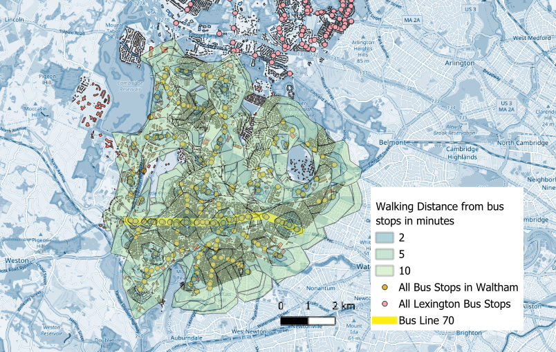
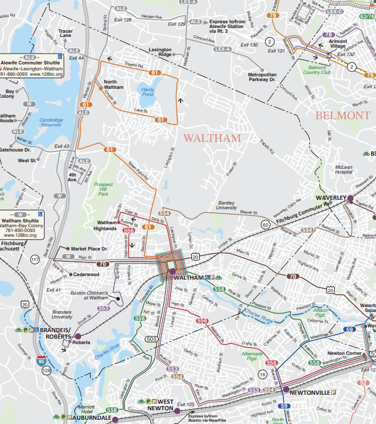

What did I create, and why?
The spatial question I am trying to answer is a comparison of available public transportation between two neighbourhoods in the USA. The inspiration for this topic came from my time living in Lexington, USA. I had many coworkers from Waltham who had to carpool together each morning because there was no public transport alternative: no bus stop, incorrect route, wrong time, or too unreliable. I wanted to learn more about bus stops in Waltham, and decided to compare the data to that of Lexington, since I suspected there would probably be a difference. Lexington and Waltham have a large income gap. Lexington has been ranked the second safest and richest town in the entire United States, with an average income of about $300,000. On the other hand, the average income in Waltham is about $120,000, which is certainly not low, but less than half of its neighbouring town.
My initial spatial data question was: is there a difference in the number of residences within a 10 minute walking range from bus stops between Waltham and Lexington, but this question very quickly transformed once I got partway through the process. Instead, I ended up focusing much more on the difference between bus line and public transit availability within both towns, so it transformed into a combination of qualitative (referencing if certain bus lines/bus stops were reliable and still in service based on people’s experiences and knowledge) and quantitative, such as the literal count of the bus stops.

For this project, I started by choosing my ROI (regions of interest) and downloading the basic urban map data for both locations. I chose both Lexington and Waltham in Massachusetts, so I utilized QuickOSM software to download the building data. QuickOSM is based on open data made available by the government, and generally covers all sorts of amenities. Every type of building and land use, such as schools, cemeteries or train stations, are categorized and organized in order to be used as an analysis tool. From here, I selected other data to download: bus stops. After creating two point layers for each ROI, I used the ORM tools to create isochrone layers for both point layers, consisting of 1, 5 and 10 minutes of walking distance. Considering the USA in general, and especially towns, are not designed for walking and generally more spread out, I felt 10 minutes was necessary for more realistic results.
Creating the vector map
From my map, a few key points become clear.
I started with mapping out the isochrone layers for Waltham, and it was interesting to observe. From the results, it would seem that the majority of residences do indeed fall within a 10 minute walking range. There are a few exceptions, but when the walking time was reduced to 5 minutes, naturally the amount of residences within range also reduced significantly. However, I found these results to be rather misleading – it constructed a view of Waltham and Lexington’s public transportation system that I knew to be untrue.
In 2024 to 2025, I lived in Lexington for a year, without a car. That meant I relied solely on my bike and public transportation – but there was no public transportation to take me to Waltham, which I frequented a couple times a week: so I biked everywhere instead. This may seem to be more of a representation of the US public transportation system, however, even if this may be the case, I believe the difference in accessibility is still visible. Lexington even has its very own personal bus line that travels all over Lexington, the Lexpress. Combined with the MBTA (routes 61, 62, 76, 77, 78, 350), GRID/REV buses (to Alewife Subway), as well as LRTA (Lowell* Regional Transport Authority). In comparison, Waltham only has two bus routes in total: MBTA 61 and 70, with 61 being written off as inconsistent and out of service majority of the time.
*Lowell is a neighbouring town. LRTA has a few stops near the border/edge of Lexington.

Based upon this further research, I decided to shift my analysis slightly. Bus stops as an indicator is not entirely representative, bus lines however, are a better indicator. After some digging around the official MBTA website as well as people’s online experiences with bus lines on forums, I discovered that there are only two bus lines that run with any sort of consistency in Waltham: line 61 and line 70 – with only bus line 70 coming frequently and being considered as a ‘reliable’ transportation option. Both go into Boston. Not a single bus line (and therefore bus stop) in Waltham directly connects to Lexington. I have a couple different maps to reflect the research steps I took to further analyze my results.

Waltham has 263 total bus stops. I counted 855 residences within 10 minute isochrone. However, when older or unreliable bus lines are removed, only line 70 on Main Street remains as a good option for a worker’s commute. Line 70 holds roughly 44 bus stops, which is a step down from the 263 total bus stops in Waltham. Then, it can be more easily visualized that only one part of Waltham is within a 10 minute walking radius of a reliable bus station or bus line, while a large portion falls outside of these isochrones. This indicates that despite the initial appearance of the map, public transportation isn’t as widely accessible as the original bus stop count would imply.
Lexington has 421 total bus stops, excluding the Lexpress. I did not calculate the isochrone for Lexington, as I shifted my focus to comparing the number of reliable bus routes instead. In Lexington, I lined the different bus routes to indicate which parts are being reached to create a clearer picture of the stark differences between the two towns.
So, let's identify the key issue here: Lack of access to reliable public transportation options to surrounding towns (e.g. buses between Waltham and Lexington)
Why does this matter?
Although I know this vector map is not representative, this seemingly insignificant topic is important to me. I know some of my closest (and dearest!) colleagues struggled to find their way to and from work: hitching rides, carpooling with the one coworker in Waltham who did own a car, calling Ubers every single day. When working 10 hour shifts earning minimum wage, being forced to spend 2 hours (coming and going) of that pay on transportation can be devastating. It truly does add up quickly: $37* a day, working five days? That’s potentially a minimum loss of $170 every single week. I believe constructing more detailed isochrone maps through isolating the line 70 – I attempted this, but could not quite figure out how to set the parameters correctly, it kept giving me errors – will give a better indicator of how many residences are actually able to benefit from the bus lines. I believe this data as a whole reveals that the lack of public transportation infrastructure in Waltham has resulted in flawed and unreliable bus routes, which robs workers trying to commute to surrounding towns (such as Lexington) of a cheap and consistent transportation option.
*Based on Uber prices, these may vary based on time of day and exact location. I choose the cheapest option, so consider these results as a minimum. It could easily reach over $200 a week on transportation.

Potential Solutions
Another bus line that eases the transition between Waltham and Lexington. I, myself, didn’t have a car, so I had to bike. There is no proper bike path, and I had to bike next to a highway to make it. Public transportation is necessary, particularly between towns. So this is something the government could attempt to address. Beyond simply increasing the amount of stops of a bus line to include more residents, it is of much higher importance to attempt to construct a bus line that connects the two towns. One solution, for example, would be to add to the pre-existing bus routes. This naturally has its downsides – a longer commute time for other people, for example, but it would require less change.
Realistically, the USA has a below average public transportation system, and part of this can be fairly attributed to the layout, as many houses, towns and other buildings are so wide spread, that it is impossible to keep all parts of a region accessible. The same can be said for the connection between Waltham and Lexington, as in both cases, the public transport commute into Boston is prioritized: Waltham has a train station straight into Boston, while Lexington offers a bus route to Alewife subway station. However, I would argue that the predominant difference is each town’s capacity to mitigate this public transportation gap. Lexington has created its own small bus line that goes all over the town, in order to avoid rendering certain parts of the town as inaccessible. On the other hand, Waltham does not have a similar solution, in fact, there have been no efforts by the municipality to work on this issue.
Another easy fix that would at least improve general public transportation in Waltham, would be to reinstate Line 61 to its previous status. Since it has now been deemed “unreliable” by the general public, that creates a negative feedback loop of commuters taking that bus line – or any bus – to work.